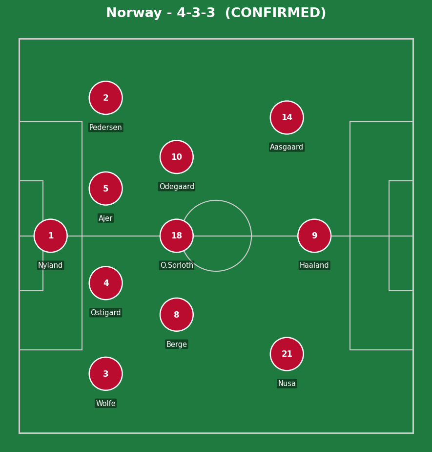
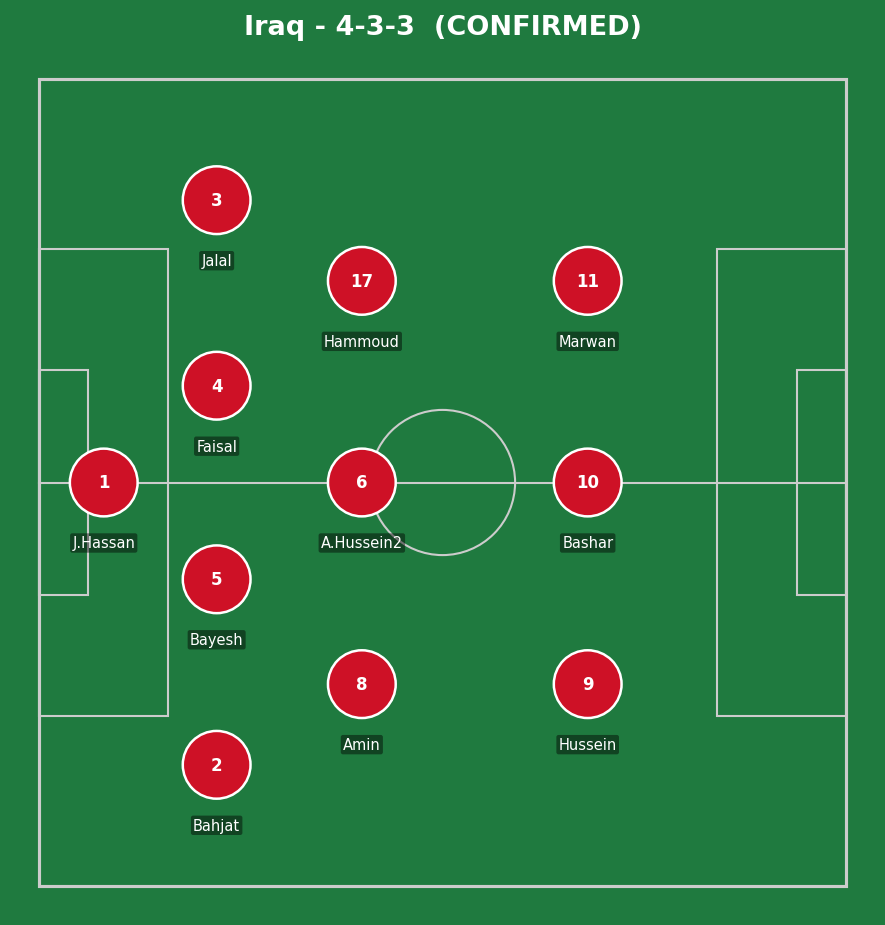
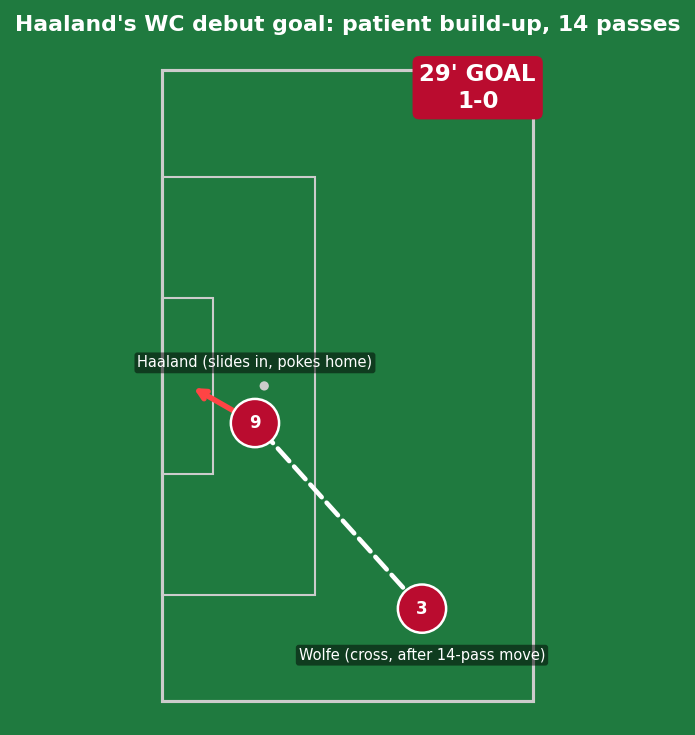
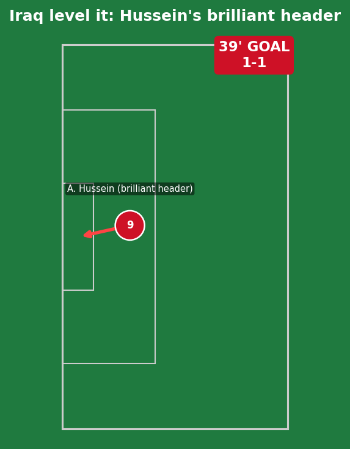
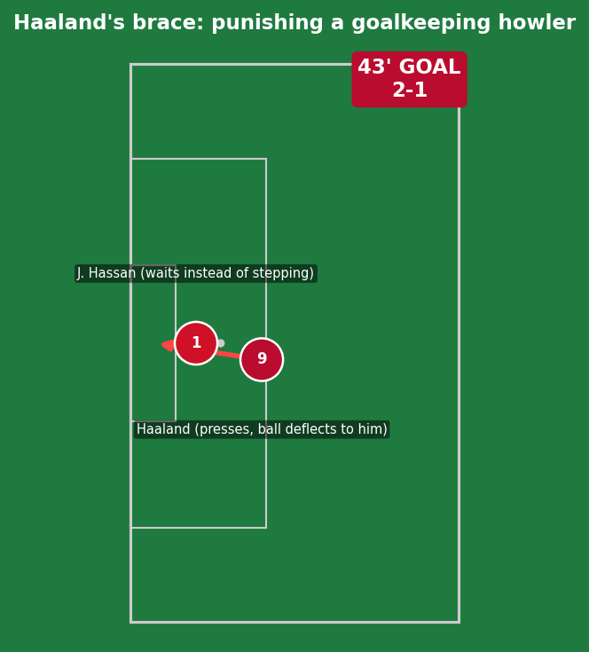
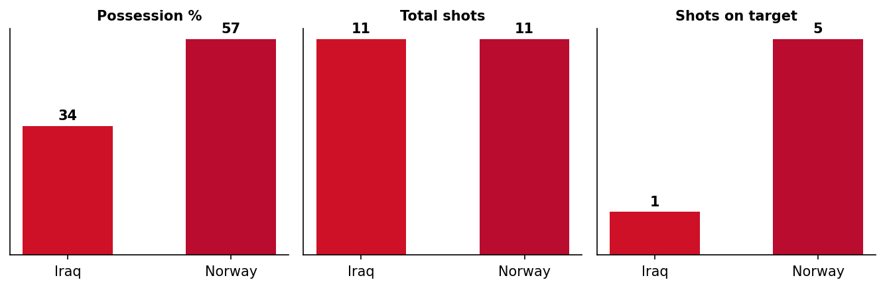
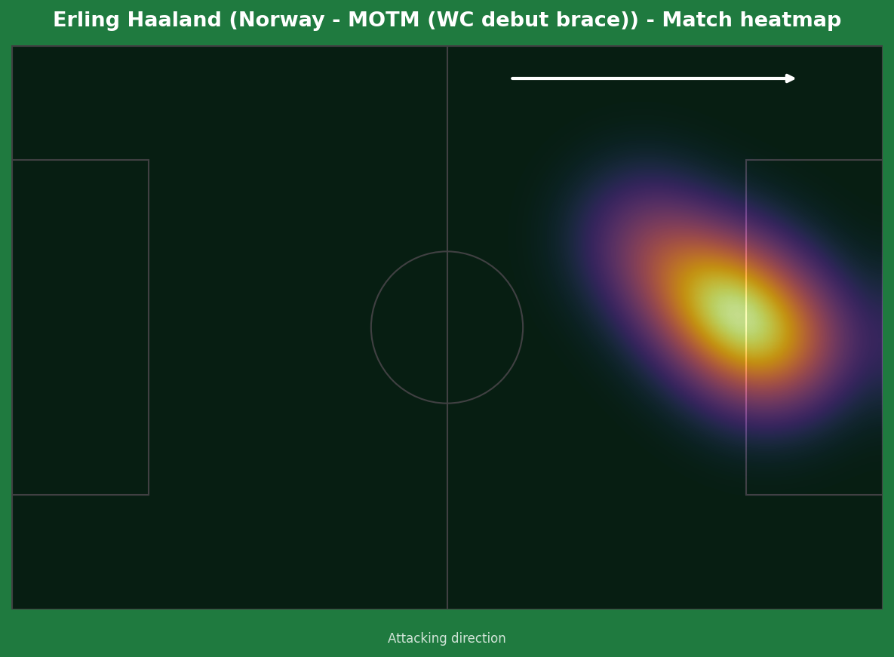
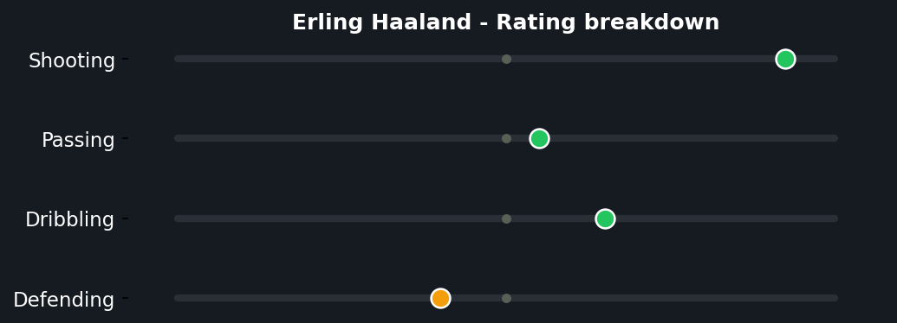
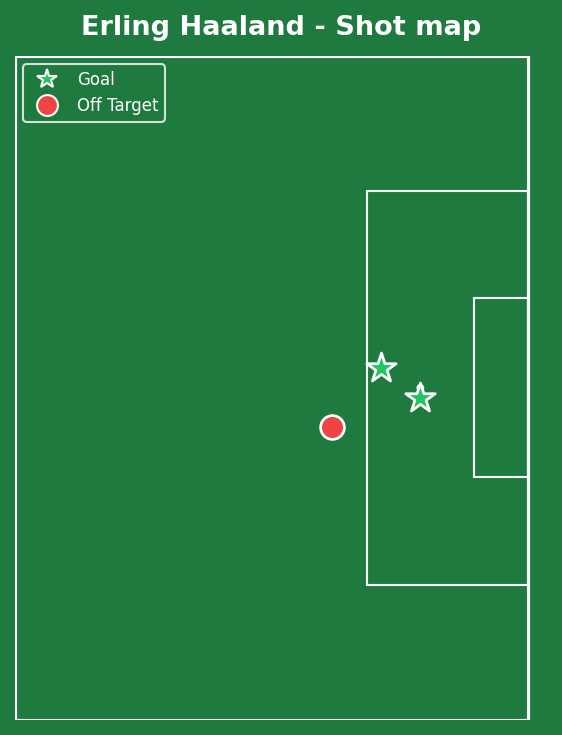

Erling Haaland's long-awaited World Cup debut went about as well as it could have - a brace either side of an Iraqi equalizer, in a match that was genuinely competitive for the first 45 minutes before Norway's class and depth told. Substitute Leo Ostigard added a third within minutes of coming on, and a late Hussein own goal completed the scoreline. At 35 years and 279 days, Orjan Nyland also became the oldest player ever to appear for Norway at a World Cup.


Norway (4-3-3): Nyland; Wolfe, Ostigard, Ajer, Pedersen; Berge, Sorloth, Odegaard; Nusa, Haaland, Aasgaard. Iraq (4-3-3): J. Hassan; Bahjat, Bayesh, Faisal, Jalal; Amin, A. Hussein (2), Hammoud; Hussein, Bashar, Marwan.
Norway's opener came from genuine patience - a 14-pass build-up before Wolfe's cross found Haaland, a sign of a team comfortable working the ball methodically rather than rushing direct balls to their star striker at every opportunity. That patience paid off once the right moment arrived.
Iraq, for their part, were competitive and organized for a long opening stretch - the equalizer through Hussein's header was a genuinely well-worked moment, not a fortunate scramble, and for 10 minutes either side of it this looked like a real contest rather than a formality. The gap in squad depth and individual quality (Haaland especially) eventually told, but Iraq's commitment in their first World Cup appearance since 2014 was clear.
The key moment was Iraq's goalkeeping error for Haaland's second - a routine situation turned into a goal purely through individual misjudgment, and against a striker of Haaland's quality, any hesitation gets punished instantly and ruthlessly.

A patient, well-worked goal rather than a moment of individual chaos - Norway strung together 14 passes before David Moller Wolfe delivered a cross from the left that Haaland slid in to poke home at the back post. Genuine team-built quality, with Haaland's contribution being the simple but well-timed finishing run rather than anything spectacular.

A genuinely brilliant header, full credit to Iraq here - no Norway defensive error to point to, just superior technique and timing in the air at a key moment. This is the kind of goal that deserved more than it ultimately earned Iraq in the final reckoning.

This one is squarely on Iraq's goalkeeper, not Norwegian quality. The ball was played back to Jalal Hassan, who chose to wait for it rather than stepping forward to meet it - exactly the kind of passive decision that invites pressure. Haaland read it immediately, closed down fast, and the goalkeeper's panicked clearance cannoned straight into him and over the line. A genuine individual mistake under pressure, immediately and ruthlessly punished - this is precisely the gap in composure that separates World Cup debutant nations from the elite.

An identical 11-11 shot count but a 5-1 gap in shots on target tells the real story - Iraq created plenty of attempts but lacked the cutting edge to consistently test Nyland.



A long-awaited World Cup debut delivered exactly as Norway needed - two goals from three shots, an efficient, clinical profile that's been the hallmark of his entire career. The rating breakdown shows the now-familiar Haaland profile: elite shooting, minimal passing involvement, very little defensive contribution - a player whose entire value is concentrated into the final 18 yards, and on this evidence, that's more than enough.
Illustrative reconstruction based on known event locations, not raw GPS tracking data.
Haaland - 8.5 ⭐ MOTM (debut brace)
Wolfe - 7.0 (assist, patient buildup)
Ostigard - 7.0 (impact sub goal)
Nyland - 6.5 (oldest-ever Norway WC player)
A. Hussein - 7.5 (brilliant header)
J. Hassan - 4.0 (costly error)
Bayesh - 5.5 (battled throughout)
Amin - 6.0 (tidy in midfield)
Next: Norway face Senegal. Iraq face France, a significantly tougher litmus test.